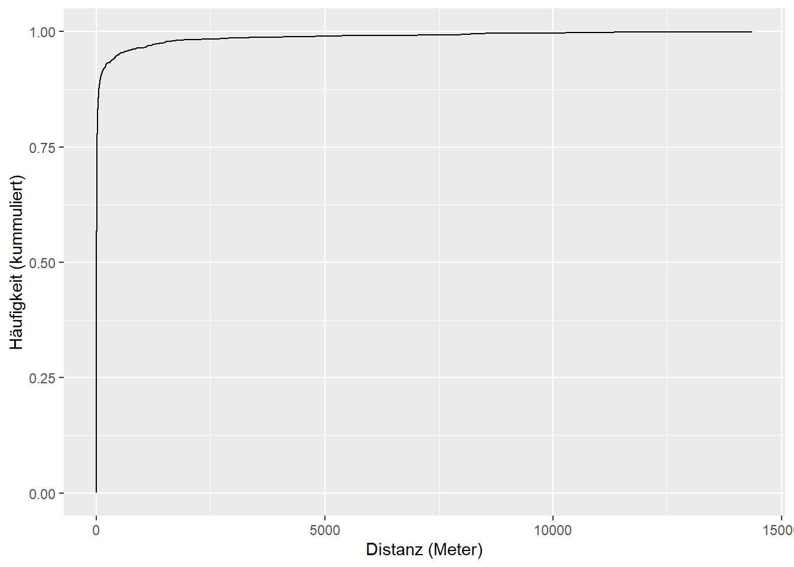

Rauman 2: Übung A
Aufgabe 1
Für die heutige Übung benötigen wir nachstehende Datensätze. Lade diese herunter und importiere sie in R. Prüfe, ob das CRS korrekt gesetzt wurde, setze es wenn nötig. Mache dich mit den Daten vertraut (visualieren, durchscrollen usw).
- Der Datensatz rotmilan.gpkg stammt aus einem grösseren Forschungsprojekt der Vogelwarte Sempach Mechanismen der Populationsdynamik beim Rotmilan. Der Datensatz wurde über die Plattform movebank zur Verfügung gestellt. Es handelt sich dabei um ein einzelnes Individuum, welches seit 2017 mit einem Sender versehen ist und über ganz Mitteleuropa zieht. Wir arbeiten in dieser Übung nur mit denjenigen Datenpunkten, die in der Schweiz erfasst wurden. Wer den ganzen Datensatz analysieren möchte, kann sich diesen über den Movebank-Link runterladen.
- Der Datensatz luftqualitaet.gpkg beinhaltet Messungen von Stickstoffdioxid \(NO_2\) aus dem Jahr 2015 für 97 Messstellen in der Schweiz. Stickstoffdioxid entstehen beim Verbrennen von Brenn- und Treibstoffen, insbesondere bei hohen Verbrennungstemperaturen, wobei der Strassenverkehr als Hauptquelle gilt. Mehr Informationen dazu findet ihr hier.
- Ebenfalls benötigt ihr den Datensatz schweiz.gpkg
Aufgabe 2
Als erstes berechnen wir die G-Function für die Rotmilanpositionen:
Schritt 1
Mit st_distance() können Distanzen zwischen zwei sf Datensätze berechnet werden. Wird nur ein Datensatz angegeben, wird eine Kreuzmatrix erstellt wo die Distanzen zwischen allen Features zu allen anderen Features dargestellt werden. Wir nützen diese Funktion zur Berechnung der nächsten Nachbarn.
rotmilan_distanzmatrix <- st_distance(rotmilan)
nrow(rotmilan_distanzmatrix)[1] 2305ncol(rotmilan_distanzmatrix)[1] 2305# zeige die ersten 6 Zeilen und Spalten der Matrix
# jeder Wert ist 2x vorhanden (vergleiche Wert [2,1] mit [1,2])
# die Diagonale ist die Distanz zu sich selber (gleich 0)
rotmilan_distanzmatrix[1:6,1:6] Units: [m]
1 2 3 4 5 6
1 0.00 14362.044 20272.492 35596.07 52519.10 64156.67
2 14362.04 0.000 8149.486 29752.74 44809.10 53775.25
3 20272.49 8149.486 0.000 22580.04 36848.93 45662.55
4 35596.07 29752.737 22580.037 0.00 17223.26 31439.57
5 52519.10 44809.096 36848.926 17223.26 0.00 16499.19
6 64156.67 53775.250 45662.554 31439.57 16499.19 0.00Schritt 2
Nun wollen wir wissen, wie gross die kürzeste Distanz von jedem Punkt zu seinem nächsten Nachbarn beträgt, also die kürzeste Distanz pro Zeile. Bevor wir diese ermitteln müssen wir die diagonalen Werte noch entfernen, denn diese stellen ja jeweils die Distanz zu sich selber dar und sind immer 0. Danach kann mit apply() eine Funktion (FUN = min) über die Zeilen (MARGIN = 1) einer Matrix (X = rotmilan_distanzmatrix) gerechnet werden. Zusätzlich müssen wir noch na.rm = TRUE setzen, damit NA Werte von der Berechnung ausgeschlossen werden. Das Resultat ist ein Vektor mit gleich vielen Werten wie Zeilen in der Matrix.
diag(rotmilan_distanzmatrix) <- NA # entfernt alle diagonalen Werte
rotmilan_distanzmatrix[1:6,1:6] Units: [m]
1 2 3 4 5 6
1 NA 14362.044 20272.492 35596.07 52519.10 64156.67
2 14362.04 NA 8149.486 29752.74 44809.10 53775.25
3 20272.49 8149.486 NA 22580.04 36848.93 45662.55
4 35596.07 29752.737 22580.037 NA 17223.26 31439.57
5 52519.10 44809.096 36848.926 17223.26 NA 16499.19
6 64156.67 53775.250 45662.554 31439.57 16499.19 NArotmilan_mindist <- apply(rotmilan_distanzmatrix,1,min, na.rm = TRUE)Schritt 3
Nun müssen wir die Distanzen nach ihrer Grösse sortieren
rotmilan_mindist <- sort(rotmilan_mindist) Schritt 4
Jetzt berechnen wir die kummulierte Häufigkeit von jeder Distanz berechnen. Die kummulierte Häufikgeit vom ersten Wert ist 1 (der Index des ersten Wertes) dividiert durch die Anzahl Werte insgesamt. Mit seq_along erhalten wir die Indizes aller Werte, mit lenth die Anzahl Werte insgesamt.
kumm_haeufgikeit <- seq_along(rotmilan_mindist) / length(rotmilan_mindist)Schritt 5
Nun wollen wir die kumulierte Häufigkeit der Werte in einer Verteilungsfunktion (engl: Empirical Cumulative Distribution Function, ECDF) darstellen. Dafür müssen wir die beiden Vektoren zuerst noch in einen Dataframe packen, damit ggplot damit klar kommt.
rotmilan_mindist_df <- data.frame(distanzen = rotmilan_mindist,
kumm_haeufgikeit = kumm_haeufgikeit)
p <- ggplot() +
geom_line(data = rotmilan_mindist_df, aes(distanzen, kumm_haeufgikeit)) +
labs(x = "Distanz (Meter)", y = "Häufigkeit (kummuliert)")
p
Lesehilfe:
Aufgabe 3
Führe nun die gleichen Schritte mit luftqualitaet durch und vergleiche die ECDF-Plots.